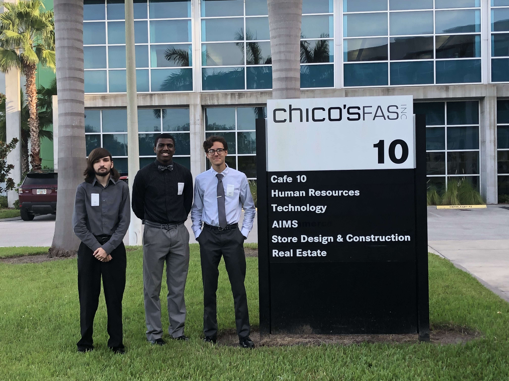

Hi, I'm Ezequiel. I have more industry certifications in technology than most kids my age. Throughout high school, I worked to gain industry certifications like Powerpoint, Word, Excel, etc. However, I also obtained multiple Microsoft Technology Associate certifications like security fundamentals and networking fundamentals.
All of my certifications allowed me to obtain an internship at Chico's FAS, Inc. They are a woman's fashion company who has its headquarters in Fort Myers, Florida. They required some IT interns, and after applying, I got the position. For a year, I was a member of their desktop support team where I focused on hardware. It was a great experience as I was able to implement the knowledge I had initially acquired into practice. In August of 2018, I was offered a full-time position in the network operations center where I am currently a technician II of operations.
I have always had an interest in coding and am trying to take some initiative in college by learning languages early. I really enjoy coding in Python due to its simplicity and general purpose use. Python can be implemented in gaming, data analysis, web development, etc. Currently, I am well-versed in HTML, CSS, and Python. However, I want to continue to gain more experience and insight into their advanced techniques.